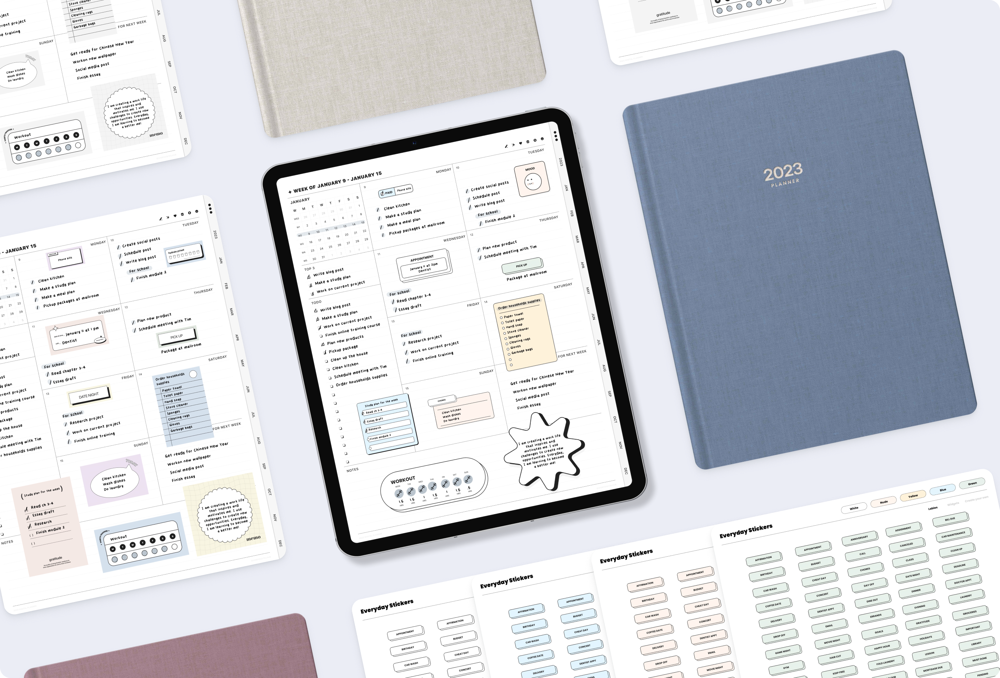

IvoryDigitalHub delivers swift and visually pleasing digital products tailored to people who love seamless user experience

My Role
As the founder of my own startup, I wear many hats and fulfill various roles. I not only serve as the product designer but also handle marketing and promotion, manage business operations, and create content for the company. In essence, I am responsible for overseeing all aspects of the business and ensuring its success from inception to implementation.
Timeline
2021 - Present
Deliverables
Product Design
User Experience
User Interface
Visual Design
Tools
Figma
Adobe Illustrator
Adobe Indesign
Adobe Photoshop
How I built my startup as solo product designer
Ivorydigitalhub was born during Covid-19, February 2020. Back in the time, I was suffering in finding a job. So I decided to start my own business at the same time I joinWeWave as a product designer.
As graphic design background, I often work with customers who are looking to increase their productivity. One of the ways that I help them achieve this is by designing digital planners and digital notebooks. Digital planners offer several advantages over traditional paper planners. First, they can be easily customized to individual needs and preferences. This means that users are more likely to actually use them, which leads to better time management and increased productivity. Second, digital planners are typically much more compact than paper planners, which makes them more convenient to carry around. Finally, and perhaps most importantly, digital planners are more environmentally friendly. By eliminating the need for paper and ink, they help to reduce carbon emissions. In a world that is increasingly focused on sustainability, this is an important consideration.
üí°What's digital planner?
A digital planner is an electronic version of a traditional planner. It is a digital notebook that allows users to manage and organize their schedules, tasks, and appointments in a digital format. Digital planners can be accessed on various devices, such as laptops, tablets, and smartphones, and can be synced across devices for easy access and updates.
Define the Problem
“Every year there are about 85 million tons of paper waste”
“Average person in the US uses more than 700 pounds of paper every year”

The problems of the paper products
The production and disposal of paper products can have negative environmental impacts on deforestation, greenhouse gas emissions, water consumption, and waste generation
- Companies in the US spend over 120 billion dollars per year on printed forms.
- Most of these print forms become outdated in just 3 months
- About 45% of all pages printed end up in the trash
- We also copy a lot: a typical document gets copied 9 to 11 times
- Each year, the US cuts down about 68 million trees to produce paper products
What we can do about the negative effects of paper → Go digital

What I learned from this
Prior to embarking on the product design process, I asked myself two questions:
Where do I start?
How can I successfully sell my own designs and generate income?
To answer these questions, I conducted market research through various online platforms, such as Etsy, Google shop, and Shopify, seeking products that aligned with my objectives. This involved creating the product from scratch and considering how I could sell the idea and make profits through online sales. My goal was to achieve success within a span of 6 months.
The approach
As a small business owner, I was faced with an entirely new experience, having to formulate a solid business plan and execute my ideas. Despite possessing a solid background in graphic design, I found the task of designing an interactive planner to be completely novel. To tackle this challenge, I turned to Youtube for guidance and began designing planners by following tutorials. In approaching all aspects of the business with a proactive and determined mindset, I was able to successfully create a product that met my expectations.
The Process
Turn everything into digital
What type of product can provide value and improve people’s lives?
Is it more effective to boost productivity using digital interactive products compared to traditional paper planners?
As part of my research on users’ needs, I conducted an analysis of positive and negative feedback left by customers on other sellers’ product reviews.
User Analysis
Age: 16+ years old from high school students to professionalsn
- Users like easy navigation
- Users like to have a fast loading file
- Users like nice and clean user interface
- Users like to have add-ons that come with the planner
The goal
My goal is to create a product that helps to reduce paper waste and ultimately protects trees. The overuse of paper products is a major environmental concern, as it leads to deforestation and habitat destruction. With the rise of technology, we now have the ability to create tools that are just as effective. If not more so, than traditional paper planners. By using digital planners, we can eliminate the need for paper and reduce the negative on the environment and contribute to a more sustainable future.
Ideation
Prior to beginning work on the planner design, I began by sketching out the important features on the page. This helped me to visualize the layout and user experience, and allowed me to identify any potential issues before moving on to the design phase.

Planner Map
To optimize the layout design of the all-in-one feature planner for my shop, I created a product structure flow. This approach allowed me to gain a more comprehensive understanding of the product's structure and helped me to prioritize the layout design as a key component of the planner's overall user experience.

The requirements
- Easy navigation
- Fast loading file with small size file
- It should be compatible with most PDF annotation apps
- Minimalist designs
The Final
The All-in-One Planner
The end result of the project is an all-in-one interactive digital planner that is compatible with any PDF annotation app. This planner is designed to be a user-friendly and efficient tool that provides a streamlined planning experience. With its interactive features and compatibility with various PDF annotation apps, users can easily access and utilize the planner from any device or platform.
Start here
The index page for the planner was designed to be the primary gateway for users to navigate to different pages and templates, with an intuitive layout and user-friendly interface for easy access.
Side tabs
In addition to the main design elements, I also incorporated side tabs into the planner, enabling users to easily switch between different month's plans
Layouts
To achieve a high level of personalization and reusability, the planner includes a variety of different layout options for users to choose from. These layouts are designed to accommodate a range of planning needs and preferences, allowing users to customize their planner to suit their specific requirements.
Add Ons - Planner Stickers
During the research process, it was found that many users desired additional features for their planners. In response, I designed digital stickers that could be easily duplicated and written on by users. This add-on provides users with a customizable and personalized touch to their planner, allowing them to enhance their planning experience in a unique way.
Add Ons - Planner Font
I also designed typography specifically for digital planning. This font was developed with a focus on clean and neat presentation, optimized for use in digital formats. Its design ensures that the text is easy to read and provides a visually appealing aesthetic that enhances the overall user experience.
The Launch
Go On Live
After one month of diligent preparation, I took the leap and launched my online shop. The visitors’ rate increased by 2880% in just six months with a conversion rate of 4.4%
Etsy Shop
I chose Etsy to open my online shop because it has a large community of buyers interested in unique items, is user-friendly and easy to set up, and offers features like built-in SEO and analytics to promote and track my progress.
My Etsy ShopOnline Store
After a successful year on Etsy, I decided to open my own website. It gives me more control over my brand and customer experience and allows for greater flexibility in marketing and promotions. Though it comes with challenges, I believe it will lead to a stronger and more sustainable business.
My StoreOver 1,000 postive reviews on Etsy
The Reflection
What I learn from this
Through the process of building a startup, I've come to learn invaluable lessons. To be honest, I never imagined myself as a business owner, and the challenges I faced were immense. I dedicated long hours to work, sacrificing leisure activities like watching TV or playing games. Yet, the rewards were worth it. Building everything by myself was far from easy, but the experience taught me not only about product design but also the intricacies of running a successful business.
Here comes more
IvoryDigitalHub continues to experience growth and expansion, with new products being developed and introduced every month. Looking ahead, the next milestone is to attain 100,000 followers on my social media accounts. This represents an exciting step forward in our ongoing efforts to connect with and engage a wider audience. I remain committed to providing innovative products and delivering value to our customers, and this is just one of the many ways we're striving to achieve that goal.